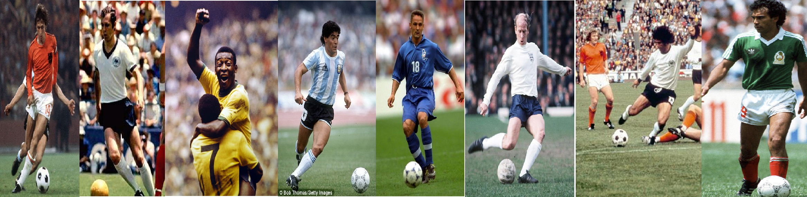

The FA declined invitations for England to take part in all three of the first World Cup Finals (1930, 1934 and 1938), only finally entering the tournament post-WW2 in 1950.
A crowd search by police before 1930's World Cup final in Uruguay led to the confiscation of 1,600 revolvers.
During the inter-war years, Italian football Chief Ottorino Barassi secretly took the Jules Rimet trophy home from a bank in Rome and kept it under his bed in a shoebox to ensure Hitler and his Nazi troops didn't find it. There it stayed until the 1950 World Cup.
When Uruguay caused a major upset by beating hosts Brazil in the 1950 final in the Maracana stadium, two of the 175,000 crowd committed suicide by jumping off the stand. Three other stadium dwellers died of heart attacks.
It was only after the 1950 final did Brazil, who'd previously played in white, adopt the yellow shirts they famously swagger about in today.
There was a 10 minute postponement before West Germany and The Netherlands met in the 1974 World Cup final after officials forgot to put in corner flags.
So unexpected was the USA's 1-0 victory over England at the 1950 World Cup, some major newspapers believed there was a mistake on the telex-reports and printed England as 10-1 winners. Others, including the New York Times, didn't run the story at all for fear of a hoax.
The attendance for Romania's group game clash with Peru in 1930's finals in Uruguay was a pitiful 300.
Noted as one of the best players of all-time, Ferenc Puskas represented both his native Hungary [1954] and also Spain [1962] in two different World Cup final tournaments.
As of May 2014, migrant workers helping Qatar to prepare for the World Cup in 2022 are dying at a rate of one per day. Over 900 labourers have reportedly died during the construction project so far.
1930 Argentina,Belgium,Brazil,Chile,France,Mexico,Paraguay,Peru,Romania,USA,Uruguay,Yugoslavia.
1934 Austria, Czechoslovakia, Egypt, Germany, Hungary, Italy, Netherlands, Spain, Sweden, Switzerland
1938 Cuba, Dutch East Indies, Norway, Poland
1950 England, India, Scotland, Turkey
1954 Scotland, South Korea, Turkey, West Germany
1958 Northern Ireland, Soviet Union, Wales
1962 Bulgaria, Colombia
1966 North Korea, Portugal
1970 El savador, Israel, Morocco
1974 Australia, East Germany, Haiti, Zaire
1978 Iran, Tunisia
1982 Algeria, Cameroon, Honduras, Kuwait, New Zealand
1986 Canada, Denmark, Iraq
1990 Costa Rica, Republic of Ireland, U.A.E
1994 Greece, Nigeria, Saudi Arabia, Russia
1998 Croatia, Jamaica, Japan, South Africa, FR Yugoslavia
2002 China PR, Ecuador, Senegal, Slovenia
2006 Angola, Ghana, Ivory Coast, Togo, Trinidad and Tobago, Ukraine Czech Republic, Serbia and Montenegro
2010 Slovekia, Serbia
2014 Bosnia and Herzegovina
Miroslav Klose 16 goals
Ronaldo de lima 15 goals
Gerd Muller 14 goals
Jose Fonataine 13 goals
Pele 12 goals
Sandor Kocsis 11 goals
Jurgen Klinsmann 11 goals
Helmut Rahn 10 goals
Teofili Cubillas 10 goals
Gary Lineker 10 goals
Grzergoz Lato 10 goals
Gabriel Batistua 10 goals
Thomas Muller 10 goals
Football is the name of the most popular sport on earth and also a name that a lot of sports share related or not. The most world known and most recognised form of football is soccer also known as soccer. This sport originated from the eighteenth century and was organised by the English and the sport was formed. The English which were the dominant force in the world then who had colonised at least fifty countries in the world. The british were very crucial to the spread of ths game because anywhere they colonised they often shared the game with the inhab itants of that land. Some explorers and tourists and adventurers will meet the british who know the sport and learn and then go and teach the natives of their towns or cities. This spread the game and when every body could play the game it became more of an official thing and thus the introduction of teams and referees and rules and so on. the game was really looking up. The first ever football amtch wa sheld between england and scotland which england won. By 1928 football was oficially feature in the Olympics and Uruguay took Gold. After that an association was formed and it was called FIFA (Federal International Football Association) and 1930 was to be the year for the first world cup and it was to be hosted by uruguay mostly because they won the olympic gold.
The 1930 FIFA World Cup was the inaugural FIFA World Cup, the world championship for men's national association football teams. It took place in Uruguay from 13 July to 30 July 1930. FIFA, football's international governing body, selected Uruguay as host nation, as the country would be celebrating the centenary of its first constitution, and the Uruguay national football team had successfully retained their football title at the 1928 Summer Olympics. All matches were played in the Uruguayan capital, Montevideo, the majority at the Estadio Centenario, which was built for the tournament.
Thirteen teams (seven from South America, four from Europe, and two from North America) entered the tournament. Few European teams chose to participate because of the difficulty of travelling to South America. The teams were divided into four groups, with the winner of each group progressing to the semi-finals. The first two World Cup matches took place simultaneously, and were won by France and the United States, who defeated Mexico 4–1 and Belgium 3–0, respectively. Lucien Laurent of France scored the first goal in World Cup history, while American goalkeeper Jimmy Douglas posted the first official "clean sheet" in the tournament.
Argentina, Uruguay, the United States and Yugoslavia each won their respective groups to qualify for the semi-finals. In the final, hosts and pre-tournament favourites Uruguay defeated Argentina 4–2 in front of a crowd of 93,000 people, and became the first nation to win the World Cup.
Argentina, Brazil, Bolivia, Chile, Mexico, Paraguay, Peru and the United States are the teams in the americas that participated in this world cup. This was a world cup that didnt feature qualification and so any country that met the requirenents and showed interest was allowed to participate.Belgium, France, Romania, and Yugoslavia are the european teams that paricpated. Estadio Centenario, Estadio Pocitos, and Estadio Parque Central Estadio Centenario, Estadio Pocitos, and Estadio Parque Central were the stadiums that all the matches took place in. After a lot of matches over the span of a month uruguay were victorious and became the first nation to host and win the world cup.
| Year | Winners | Final Score | Runners-up | Location |
|---|---|---|---|---|
| 1930 | Uruguay | 4 - 2 | Argentina | Montevideo, Uruguay |
| 1934 | Italy | 2 - 1 | Czechoslovakia | Rome, Italy |
| 1938 | Italy | 4 - 2 | Hungary | Paris, France |
| 1950 | Uruguay | 2 - 1 | Brazil | Rio de Janeiro, Brazil |
| 1954 | West-Germnany | 3 - 2 | Hungary | Bern, Switzerland |
| 1958 | Brazil | 5 - 2 | Sweden | Solna, Sweden |
| 1962 | Brazil | 3 - 1 | Czechoslovakia | Santiago, Chile |
| 1966 | England | 4 - 2 | West-Germany | London, England |
| 1970 | Brazil | 4 - 1 | Italy | Mexico City, Mexico |
| 1974 | West-Germany | 2 - 1 | Netherlands | Munich, West-Germany |
| 1978 | Argentina | 3 - 1 | Netherlands | Beunos Aires, Argentina |
| 1982 | Italy | 3 - 1 | West-Germany | Madrid, Spain |
| 1986 | Argentina | 3 - 2 | West-Germany | Mexico City, Mexico |
| 1990 | West-Germany | 1 - 0 | Argentina | Rome, Italy |
| 1994 | Brazil | 0 - 0 (Brazil won on penalties) | Italy | Pasadena,California, United States of America |
| 1998 | France | 3 - 0 | Brazil | Saint-Denis(Paris), France |
| 2002 | Brazil | 2 - 0 | Germany | Yokohama, Japan |
| 2006 | Italy | 1 - 1(Italy won on penalties) | France | Berlin, Germany |
| 2010 | Spain | 1 - 0 | Netherlands | Johannesburg, South Africa |
| 2014 | Germany | 1 - 0 | Argentina | Rio de Janeiro, Brazil |
The asterisk notes that the 1950 FIFA World Cup did not have a final, rather, the tournament was decided by a 4-way round robin phase. The match listed in the column above between Brazil and Uruguay was the tournament-deciding match.